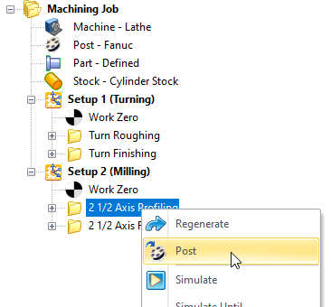
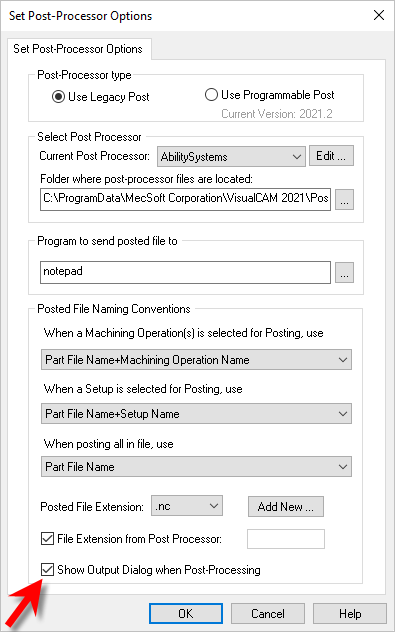
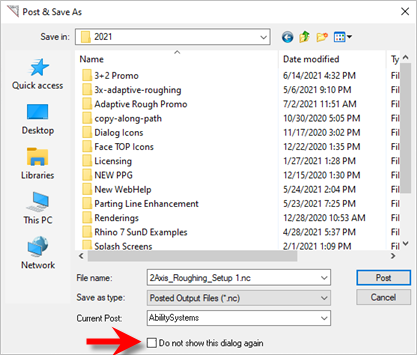

|
<< Click to Display Table of Contents >> Navigation: VisualCAM FAQs > Post-Processing > Why is my Save Post dialog not displaying? |
If you post-process an operation and you do not see the Post & Save As dialog appear to allow you to name and locate the save folder it means that this option has been disabled. You can re-enable this option from the Set Post-Processor Options dialog. Here are the steps:
1.From the Machining Browser, select the Program tab.
 MILL Module, Machining Browser, Program Tab |
2.From the Program tab select the Post option.
3.From the Set Post-Processor Options dialog, under the Posted File Naming Conventions check the box named Show Output Dialog when Post-Processing". It is located in the image below.
 Set Post-Processor Options Dialog |
4.Pick OK to close the dialog. Now test it by posting an operation. You should see the Post & Save As dialog appear.
 Post & Save As Dialog |
5.Make sure that you do not check the box named "Do not show this dialog again".